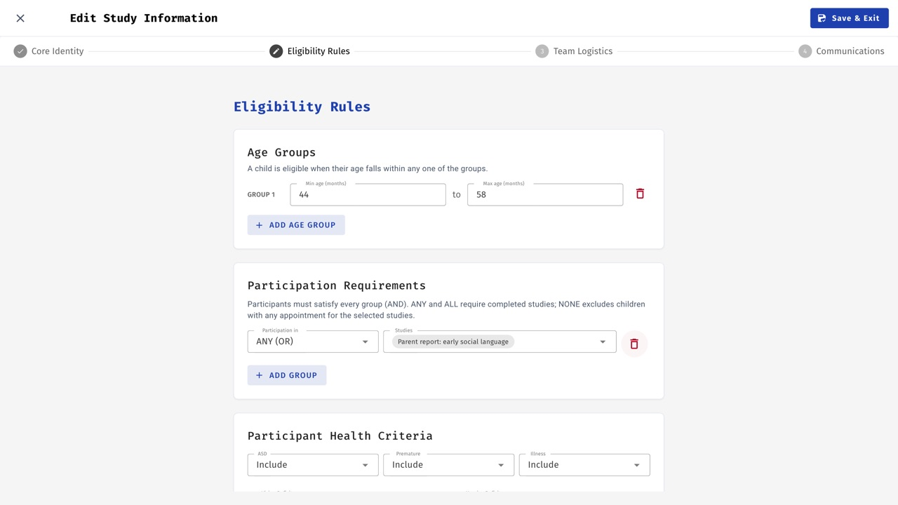
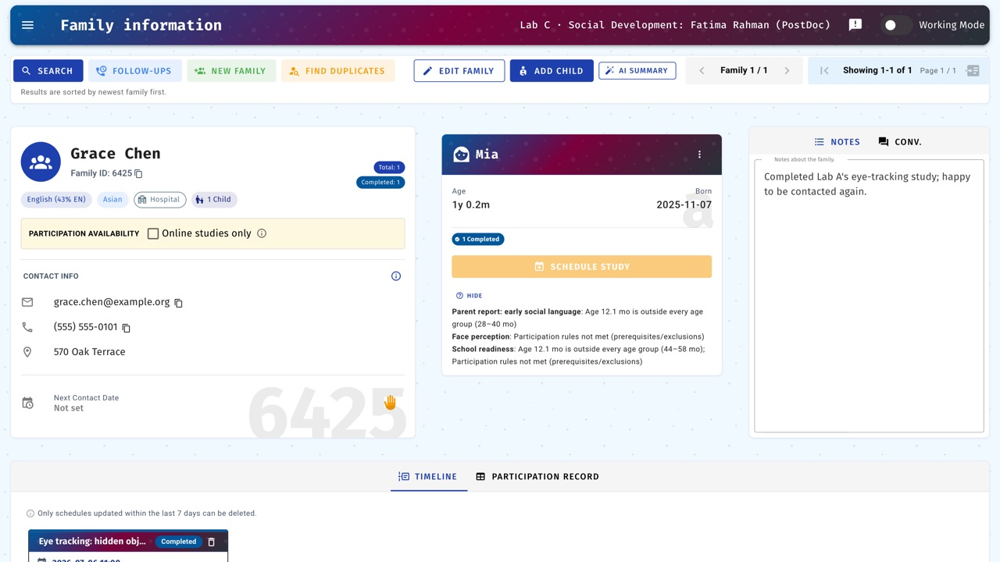
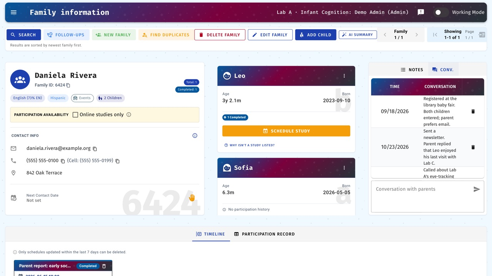
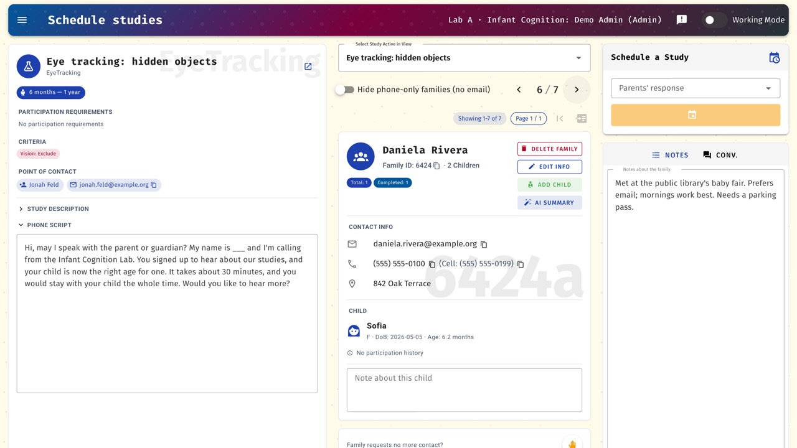
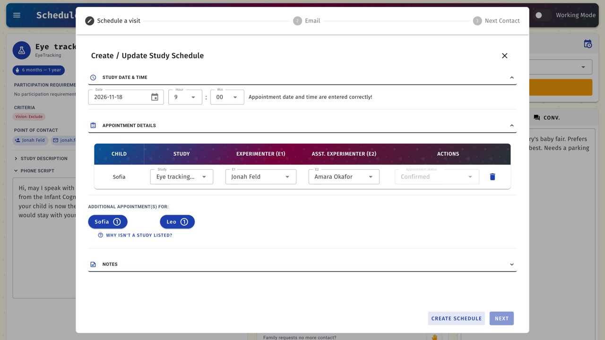
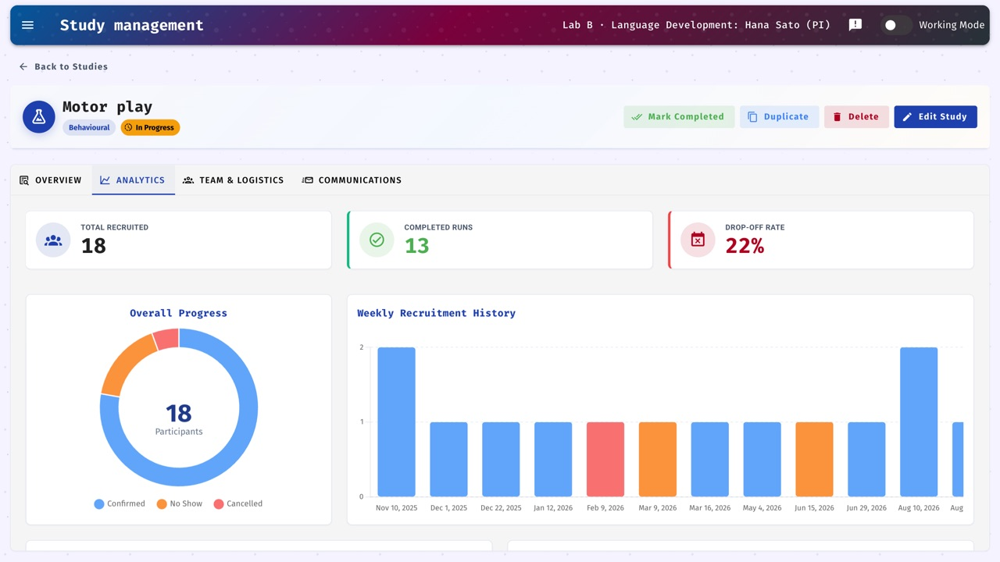
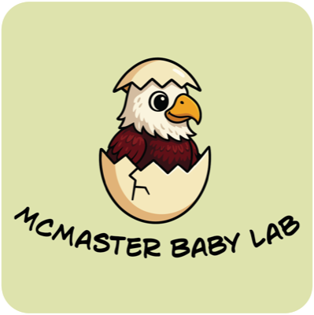

Developmental Research Database · open source · MIT
Research happens in a changing world. Its infrastructure should keep the science constant.
Behind every behavioral experiment sits an operations layer: a participant pool, records of who is eligible and who has been contacted, schedules, rooms, and the people who run sessions. DRDB is a self-hosted system that turns that coordination from etiquette into enforced rules.
01 · The problem
The invisible operations layer
Before a single trial is run, someone must find families who meet the inclusion criteria, confirm they have not already completed a related study, contact them without overwhelming them, book a room and an experimenter, remind them to come, and record what happened.
In most laboratories this work is carried by spreadsheets, shared drives, inboxes, and the memory of a lab coordinator. Its failures are rarely reported, but they shape the data. Each of the six questions below is a place where the layer quietly does the work — and where doing it badly changes the result.
Who is eligible?
Age windows close, and families who have already done a related paradigm are no longer naïve. Participants who turn out to be ineligible are excluded after testing, which costs power (Frank et al., 2017) and turns into a protocol deviation on paper.
Who contacts whom?
Several labs draw on one pool, so one lab's call is another lab's problem (Peeler et al., 2021). Over-contacted volunteers stop responding (Hurwitz et al., 2017), and the order of rows in a shared spreadsheet quietly decides who gets invited at all.
Who can see what?
Records kept on a lab machine cannot be reached from home; records shared with everyone are too open for participant data. Access and access-by-accident are the same problem viewed from two sides.
Who does the work?
New assistants arrive every term, and procedural fidelity depends on onboarding (Byers-Heinlein et al., 2020). Detailed records of who contacted which family, and when, are what let a lab keep track of its own work (Hurwitz et al., 2017).
Who shares the space?
Rooms, equipment, and parking are shared. A missed infant visit costs more than an empty hour: if the child ages out of the window before the session can be rebooked, the participant is lost entirely.
Who is in the pool?
Samples still over-represent easily-contacted families (Nielsen et al., 2017), and how a lab recruits is itself a methodological choice, not an administrative detail (Sugden & Moulson, 2015).
02 · The stress test
Why developmental research is the hardest case
Developmental research takes the hardest version of every one of these problems. Eligibility is defined by age windows that are often only weeks wide, so the list of who can be invited changes daily. A single family can hold several participants, each with their own history and their own rules. And families are recruited from the community rather than from a course-credit pool, so their goodwill has to survive years of repeated invitations.
Whatever manages this has to be right every day, not most days.


03 · History
Born in March 2020
The DRDB repository was created on 29 March 2020, about two weeks after the province declared an emergency. The problem that week was narrow and practical: the participant records lived on laboratory computers that nobody could reach, and the people who knew them were scattered. The first version was a web database so that a dispersed team could work from one copy of the truth.
That emergency set the shape of everything after it. In 2020 the question was can we reach families at all? By 2023 it was who gets which room, and when? By 2026 it was can a new assistant run this lab correctly on day one, and can a new lab adopt this without us? Each phase came from a real change in the world outside the lab.
| External shift | What it broke | What DRDB added |
|---|---|---|
| Pandemic lockdown Mar 2020 |
Records on lab computers became unreachable; the team was dispersed. | Web-based shared database (Mar 2020); real-time updates so remote users don't collide (Feb 2021). |
| Testing moves online 2020–21 |
Sessions move to video; families are no longer expected to be local (Sheskin et al., 2020). | Zoom links for online studies (Nov 2020); time-zone support (Mar 2021). |
| Remote, shifting workforce 2020–21 |
Training can't happen side by side; new assistants arrive mid-semester. | Training mode with practice families (Nov 2020); phone scripts stored per study (Jan 2021). |
| Return to the lab 2022–23 |
Shared rooms and multiple labs back in one building; double-bookings return. | Testing-room management and multi-lab features (Jun 2023); lab locking and auto-release. |
| Campus logistics 2026 |
Parking and shared space create friction for families and late visits. | Shared seven-day parking board across labs (Oct 2026). |
| How families communicate 2021–26 |
Email fatigue; some families are reachable only by phone. | Next-contact dates and scheduled follow-up prompts; filters for families reachable only by phone. |
| Staff turnover over years 2026 |
Who did what is lost when people leave. | Retired experimenters stay in the record (May 2026); personnel history with role and project dates (Aug 2026); workload analytics (Aug 2026). |
| Labs beyond the founders 2026 |
Adopting institutions don't have the developers on hand. | First-run setup wizard (Apr 2026); Docker deployment (Sep 2026); per-lab email branding (Jun 2026). |
| AI and privacy expectations 2025–26 |
Pressure to use AI tools sits against participant confidentiality. | Optional AI drafting that can run on a local model, restricted to training data by default (Sep 2026). |
04 · Principles
Design principles that emerged over six years
Adapt the infrastructure so the science can stay constant.
The other principles are how that one is achieved. None of them was decided in a meeting; each was forced by a season where the alternative was worse.
- One source of truth. Every family, child, contact, and appointment lives in one place that every authorized person sees in real time.
- Encode etiquette as rules. Lab locking, auto-release after fourteen days, next-contact dates and follow-up prompts, prerequisite and exclusion rules — coordination that used to depend on people remembering is enforced by the system.
- Automate the routine; keep humans for judgment. Reminders, calendar invitations, and closing out past sessions are automatic. Deciding whom to invite stays with researchers.
- Safe to learn. A training mode with practice families, kept out of statistics and out of automated reminders, so a new assistant can click anything.
- Privacy by default. Self-hosted; the optional language model can run on a local deployment so drafting never leaves the institution's hardware.

05 · In practice
Following one family
A family registers at a community event with a four-month-old and a three-year-old. Both children are entered under one family and linked as siblings.
When the infant enters the window for Lab A's study at six months, she appears in a randomly ordered eligible list — randomized so that the chance of being invited doesn't depend on when a family registered. When another researcher has opened the same family in the eligible list, a warning asks the assistant to pause before booking. A week later Lab A books the visit: the family is now locked to Lab A, a calendar invitation goes to the family and both experimenters, the testing room is reserved, and a reminder with parking instructions goes out the day before.
After the visit the session is marked complete and the family is released. At twelve months the infant is eligible for Lab B's study but excluded from Lab C's, because she has already completed a related paradigm.
The same path fits an adult cohort: an older adult re-invited each year who must be excluded from paradigms they have already seen.


06 · Etiquette as rules
Lab courtesy, written into software
Much of what DRDB enforces was already lab etiquette — the things a good recruiter does without being told. The difference is that DRDB does not rely on anyone remembering. The left column below is how the founding lab's training materials teach it; the right column is what the software does.
| How the lab teaches it | What DRDB does | Source |
|---|---|---|
| Record every call “so other researchers don't call back with the same information.” | A conversation log on each family, and a warning and disabled booking action when the same family is already open in another eligible list. | recruitment |
| “Make the most of the participant's time” — bundle studies into one visit, and ask about eligible siblings. | Additional eligible studies and eligible siblings are highlighted while booking. | family info |
| Follow up “in a timely manner.” | Every contact sets a next-contact date and feeds a follow-ups queue. | recruitment |
| Mark completed studies so a family is “not contacted again” for that study. | Completion status feeds prerequisite and exclusion rules at booking time. | studies |
| Respect a family's wish to stop being contacted. | A “No More Contact” flag that holds across every lab drawing on the pool. | recruitment |
| Email templates “should be the same as the ones in the approved study ethics protocol.” | Per-study templates, generated from the study's details and proofread before sending. | lab setup |
| Block the times you are unavailable. | Experimenter calendars are linked; invitations go to the family and the experimenters. | researchers |
| Mark people inactive when they leave the lab. | Retired personnel are removed from active lists but kept in the history. | researchers |
07 · Learning DRDB
How a new assistant starts
- An admin or lab manager adds them to the lab and gives them a role.
- They are assigned to a study as an experimenter.
- They practise in training mode, on practice families that are kept separate from the real data and statistics.
- They switch to working mode and start calling families.
The full walkthrough lives in the founding lab's training materials: recruitment · family information · researchers · studies · lab setup · FAQs. It is the founding lab's own, and other labs are expected to adapt it.
08 · In use
What the founding lab's numbers look like
Database figures are the founding lab's, as of 2026. The university count covers all known deployments.

09 · Beyond developmental research
Any lab with a standing pool has these problems
A cognitive-aging lab re-inviting the same older adults each year has time-varying eligibility. Several EEG and imaging groups sharing one registry have contact coordination and non-naïve exclusions. They just don't have the word developmental in the title.
Subject-pool systems manage course-credit participants. REDCap and Qualtrics manage data capture. DRDB manages the pool and the operations around it — eligibility, contact history, scheduling, and the people — which is the part that used to live in a spreadsheet.
10 · Under the hood
For the technical reader
The parts that get used daily: duplicate detection and merge, Excel and CSV import, per-lab email branding, Zoom links, per-lab time zones, the shared parking board, encrypted migration between deployments, Swagger API docs, and a first-run setup wizard so a new lab can start without a developer.
It deploys with Docker Compose; the next section has the steps.
11 · Get started
Running DRDB in your lab
If your lab already runs DRDB, ask your lab manager for its address and an account; there is nothing to install. To try it yourself, you need:
- A Mac or Windows computer with Docker Desktop, or a Linux server with Docker Engine and Compose. Docker runs the web app and its database together.
- For a lab deployment, a server your institution approves for participant data, and someone from IT for an hour or two.
- A Google Cloud project with the Gmail and Calendar APIs enabled, if DRDB should send emails and calendar invitations. You can try everything else without it.
First run
- Download the repository from GitHub and open a terminal in its folder.
- Copy
.env.exampleto.envand set three long random values forDB_PASS,DB_ROOT_PASSandJWT_KEY. - Run
docker compose up --build -d, then openhttp://localhost:8080. - Sign in with the default administrator account given in the README. The setup wizard then asks you to set a new password, name your lab and connect Google.
Start with fictional families while you learn the system. The deployment section of the README has the full walkthrough, Google setup, backups and upgrades. For questions or bugs, open an issue on GitHub.
Cite DRDB
If DRDB supports research you publish, please cite the software. A methods paper is in preparation; this entry will point to it once it is out.
Xiao, N. (2026). DRDB: Developmental Research Database (Version 3.2.2) [Computer software]. https://github.com/naiqixiao/DRDB@software{xiao_drdb_2026,
author = {Xiao, Naiqi},
title = {{DRDB}: Developmental Research Database},
year = {2026},
version = {3.2.2},
url = {https://github.com/naiqixiao/DRDB}
}12 · References
References
- Byers-Heinlein, K., Bergmann, C., Davies, C., Frank, M. C., Hamlin, J. K., Kline, M., Kominsky, J. F., Kosie, J. E., Lew-Williams, C., Liu, L., Mastroberardino, M., Singh, L., Waddell, C. P. G., Zettersten, M., & Soderstrom, M. (2020). Building a collaborative psychological science: Lessons learned from ManyBabies 1. Canadian Psychology, 61(4), 349–363. https://doi.org/10.1037/cap0000216
- Frank, M. C., Bergelson, E., Bergmann, C., Cristia, A., Floccia, C., Gervain, J., Hamlin, J. K., Hannon, E. E., Kline, M., Levelt, C., Lew-Williams, C., Nazzi, T., Panneton, R., Rabagliati, H., Soderstrom, M., Sullivan, J., Waxman, S., & Yurovsky, D. (2017). A collaborative approach to infant research: Promoting reproducibility, best practices, and theory-building. Infancy, 22(4), 421–435. https://doi.org/10.1111/infa.12182
- Hurwitz, L. B., Schmitt, K. L., & Olsen, M. K. (2017). Facilitating development research: Suggestions for recruiting and re-recruiting children and families. Frontiers in Psychology, 8, Article 1525. https://doi.org/10.3389/fpsyg.2017.01525
- Nielsen, M., Haun, D., Kärtner, J., & Legare, C. H. (2017). The persistent sampling bias in developmental psychology: A call to action. Journal of Experimental Child Psychology, 162, 31–38. https://doi.org/10.1016/j.jecp.2017.04.017
- Peeler, A., Miller, H., Ogungbe, O., Lewis Land, C., Martinez, L., Guerrero Vazquez, M., Carey, S., Murli, S., Singleton, M., Lacanienta, C., Gleason, K., Ford, D., & Himmelfarb, C. R. (2021). Centralized registry for COVID-19 research recruitment: Design, development, implementation, and preliminary results. Journal of Clinical and Translational Science, 5(1), e152. https://doi.org/10.1017/cts.2021.819
- Sheskin, M., Scott, K., Mills, C. M., Bergelson, E., Bonawitz, E., Spelke, E. S., Fei-Fei, L., Keil, F. C., Gweon, H., Tenenbaum, J. B., Jara-Ettinger, J., Adolph, K. E., Rhodes, M., Frank, M. C., Mehr, S. A., & Schulz, L. (2020). Online developmental science to foster innovation, access, and impact. Trends in Cognitive Sciences, 24(9), 675–678. https://doi.org/10.1016/j.tics.2020.06.004
- Sugden, N. A., & Moulson, M. C. (2015). Recruitment strategies should not be randomly selected: Empirically improving recruitment success and diversity in developmental psychology research. Frontiers in Psychology, 6, Article 523. https://doi.org/10.3389/fpsyg.2015.00523

Developed at
The McMaster Baby Lab
DRDB is developed by researchers at the McMaster Baby Lab, McMaster University, where it has run the lab's participant pool since 2020. Learn more about the lab and its work on the lab website.